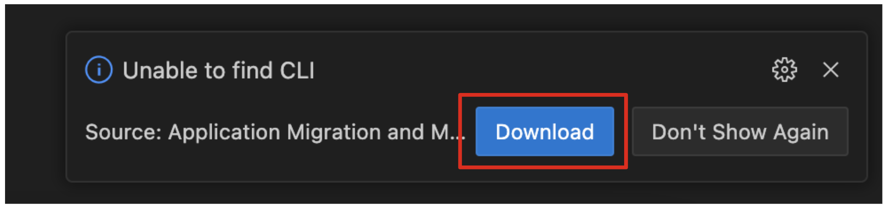

Migration to JBoss EAP - Instructions
In this module you’ll work with an existing Java EE application designed for a retail webshop. The current version of the webshop is a Java EE application built for Oracle Weblogic Application Server. As part of a modernization strategy you’ve decided to move this application to JBoss EAP, containerize it, and run it on a Kubernetes platform with OpenShift.
What is Migration Toolkit for Applications?
Migration Toolkit for Applications (MTA) is an extensible and customizable rule-based tool that helps simplify migration of Java applications.
It is used by organizations for:
-
Planning and work estimation
-
Identifying migration issues and providing solutions
-
Detailed reporting
-
Built-in rules and migration paths
-
Rule extensibility and customization
-
Ability to analyze source code or application archives
Read more about it in the MTA documentation
1.1. Analyze app using MTA IDE Plugin
In this step we will analyze a monolithic application built for use with Oracle WebLogic Server (WLS). This application is a Java EE application using a number of different technologies, including standard Java EE APIs as well as proprietary Weblogic APIs and best practices.
For this lab, we will use the MTA Visual Studio Code Extension based on Red Hat OpenShift Dev Spaces.
The IDE Plugin for the Migration Toolkit for Applications provides assistance directly in Eclipse and Red Hat OpenShift Dev Spaces for developers making changes for a migration or modernization effort. It analyzes your projects using MTA, marks migration issues in the source code, provides guidance to fix the issues, and offers automatic code replacement when possible.
1.2. Access Your Development Environment
You will be using Visual Studio Code (VS Code) based on Red Hat OpenShift Dev Spaces. Changes to files are auto-saved every few seconds, so you don’t need to explicitly save changes.
To get started, {{ DS_URL }}[access the Red Hat OpenShift Dev Spaces instance^] and select Log in with OpenShift button:
Type in the following credentail:
-
Username:
%USERID% -
Password:
{openshift-password}

|
In case you see the Authorize Access page as below, select Allow selected permissions button. 
|
Once you log in, you’ll be placed on the Create Workspace dashboard. Copy the following Git Repo URL and select Create & Open.
A new window or tab in your web browser will open automatically to showcase the progess about Starting workspace quarkus-workshop. It takes about 60 seconds to finish the process.
|
In case you see this information page, select 
|
After a few seconds, you’ll be placed in the workspace.

|
In case you see this infomation page, check on 
|
You’ll use all of these during the course of this workshop, so keep this browser tab open throughout. If things get weird, you can simply reload the browser tab to refresh the view.
1.3. Use the configuration editor to setup the analysis
Click on MTA Explorer icon on the left. Then, a new MTA configuration will be shown up:
|
In case you see this popup, select

|
To input source files and directories, click on Add then select Open File Explorer:
Note that you might need to remove an existing input directory.

Open projects > cloud-native-workshop-v2m1-labs then select monolith directory. Click on Choose…:

Then you will see that /projects/cloud-native-workshop-v2m1-labs/monoilth directory is added in --input configuration.
Be sure that eap7 is already selected in --target server to migrate:

Click on --source to migrate from then select weblogic. Leave the other configurations:

1.4. Run an analysis report
Click on Run icon to analyze the WebLogic application. Note that if you don’t see the Run icon, you need to click on the mtaConfiguration:

Migration Toolkit for Applications (MTA) CLI will be executed automatically in a new terminal then it will take a few mins to complete the analysis. Click on Open Report:

1.5. Review the report

The main landing page of the report lists the applications that were processed. Each row contains a high-level overview of the story points, number of incidents, and technologies encountered in that application.
Click on the monolith link to access details for the project:

1.6. Understanding the report
The Dashboard gives an overview of the entire application migration effort. It summarizes:
-
The incidents and story points by category
-
The incidents and story points by level of effort of the suggested changes
-
The incidents by package
|
Story points are an abstract metric commonly used in Agile software development to estimate the relative level of effort needed to implement a feature or change. Migration Toolkit for Application uses story points to express the level of effort needed to migrate particular application constructs, and the application as a whole. The level of effort will vary greatly depending on the size and complexity of the application(s) to migrate. |
You can use this report to estimate how easy/hard each app is, and make decisions about which apps to migrate, which to refactor, and which to leave alone. In this case we will do a straight migration to JBoss EAP.
On to the next step to change the code!
2.1. Migrate to JBoss EAP
In this step you will migrate some Weblogic-specific code in the app to use standard (Jakarta EE) interfaces.
Let’s jump to code containing identified migration issues. Expand the monolith source project in the MTA explorer and navigate to monolith > src > main > java > com > redhat > coolstore > utils > StartupListener.java. Be sure to click the arrow next to the actual class name StartupListener.java to expand and show the Hints:
| You can use kbd:[CTRL+p] (or kbd:[CMD+p] on Mac OSX) to quickly open a file. Simply start typing the name of the file in the text box that appears and select your file from the list that is produced. |

In the Explorer, MTA issues use an icon to indicate their severity level and status. The following table describes the meaning of the various icons:

2.2. View Details about the Migration Issues
Let’s take a look at the details about the migration issue. Right-click on WebLogic ApplicationLifecycleListenerEvent[rule-id:xxx] in Hints of StartupListener.java file. Click on View Details:

The WebLogic ApplicationLifecycleListener abstract class is used to perform functions or schedule jobs in Oracle WebLogic, like server start and stop. In this case we have code in the postStart and preStop methods which are executed after Weblogic starts up and before it shuts down, respectively.
In Jakarta EE, there is no equivalent to intercept these events, but you can get equivalent functionality using a Singleton EJB with standard annotations, as suggested in the issue in the MTA report.
We will use the @Startup annotation to tell the container to initialize the singleton session bean at application start. We
will similarly use the @PostConstruct and @PreDestroy annotations to specify the methods to invoke at the start and end of
the application lifecyle achieving the same result but without using proprietary interfaces.
Using this method makes the code much more portable.
2.3. Fix the ApplicationLifecycleListener issues
In this section we’re going to deal with the following two issues from the report:

To begin we are fixing the issues under the Monolith application. Click on WebLogic ApplicationLifecycleListenerEvent[rule-id:xxx] in Hints of StartupListener.java file:
You can also navigate to the cloud-native-workshop-v2m1-labs folder in the project tree, then open the file monolith/src/main/java/com/redhat/coolstore/utils/StartupListener.java by clicking on it.
Replace the file content with:
package com.redhat.coolstore.utils;
import javax.annotation.PostConstruct;
import javax.annotation.PreDestroy;
import javax.ejb.Startup;
import javax.inject.Singleton;
import javax.inject.Inject;
import java.util.logging.Logger;
@Singleton
@Startup
public class StartupListener {
@Inject
Logger log;
@PostConstruct
public void postStart() {
log.info("AppListener(postStart)");
}
@PreDestroy
public void preStop() {
log.info("AppListener(preStop)");
}
}|
Where is the Save button? VS Code will autosave your changes, that is why you can’t find a SAVE button - no more losing code because you forgot to save. You can undo with kbd:[CTRL-Z] (or kbd:[CMD-Z] on a Mac) or by using the In case you see the red lines in the source code, you can’t ignore it because they are the migration issues rather than compliation errors. |
2.4. Test the build
Open a Terminal window.
In the terminal, issue the following command to test the build:
mvn -f $PROJECT_SOURCE/monolith clean packageIf it builds successfully (you will see BUILD SUCCESS), let’s move on to the next issue! If it does not compile, verify you made all the changes correctly and try the build again.
[INFO] --- maven-war-plugin:2.2.0:war (default-war) @ monolith ---
[INFO] Packaging webapp
[INFO] Assembling webapp [monolith] in [/projects/cloud-native-workshop-v2m1-labs/monolith/target/ROOT]
[INFO] Processing war project
[INFO] Copying webapp resources [/projects/cloud-native-workshop-v2m1-labs/monolith/src/main/webapp]
[INFO] Webapp assembled in [841 msecs]
[INFO] Building war: /projects/cloud-native-workshop-v2m1-labs/monolith/target/ROOT.war
[INFO] ------------------------------------------------------------------------
[INFO] BUILD SUCCESS
[INFO] ------------------------------------------------------------------------
[INFO] Total time: 7.333 s
[INFO] Finished at: 2023-07-06T18:28:28Z
[INFO] ------------------------------------------------------------------------2.5. View the diffs
You can review the changes you’ve made. On the left, click on the Version Control icon, which shows a list of the changed files. Double-click on StartupListener.java to view the differences you’ve made:
VS Code keeps track (using Git) of the changes you make, and you can use version control to check in, update, and compare files as you change them.
For now, go back to the Explorer tree and lets fix the remaining issues.
2.6. Fix the logger issues
In this section we’ll be looking to remediate this part of the migration report:

Some of our application makes use of Weblogic-specific logging methods like the NonCatalogLogger, which offer features related to logging of
internationalized content, and client-server logging.
The WebLogic NonCatalogLogger is not supported on JBoss EAP (or any other Java EE platform), and should be migrated to a
supported logging framework, such as the JDK Logger or JBoss Logging.
We will use the standard Java Logging framework, a much more portable framework. The framework also supports internationalization if needed.
In the same monolith directory, open the src/main/java/com/redhat/coolstore/service/OrderServiceMDB.java file and replace its contents with:
package com.redhat.coolstore.service;
import javax.ejb.ActivationConfigProperty;
import javax.ejb.MessageDriven;
import javax.inject.Inject;
import javax.jms.JMSException;
import javax.jms.Message;
import javax.jms.MessageListener;
import javax.jms.TextMessage;
import com.redhat.coolstore.model.Order;
import com.redhat.coolstore.utils.Transformers;
import java.util.logging.Logger;
@MessageDriven(name = "OrderServiceMDB", activationConfig = {
@ActivationConfigProperty(propertyName = "destinationLookup", propertyValue = "topic/orders"),
@ActivationConfigProperty(propertyName = "destinationType", propertyValue = "javax.jms.Topic"),
@ActivationConfigProperty(propertyName = "acknowledgeMode", propertyValue = "Auto-acknowledge")})
public class OrderServiceMDB implements MessageListener {
@Inject
OrderService orderService;
@Inject
CatalogService catalogService;
private Logger log = Logger.getLogger(OrderServiceMDB.class.getName());
@Override
public void onMessage(Message rcvMessage) {
TextMessage msg = null;
try {
if (rcvMessage instanceof TextMessage) {
msg = (TextMessage) rcvMessage;
String orderStr = msg.getBody(String.class);
log.info("Received order: " + orderStr);
Order order = Transformers.jsonToOrder(orderStr);
log.info("Order object is " + order);
orderService.save(order);
order.getItemList().forEach(orderItem -> {
catalogService.updateInventoryItems(orderItem.getProductId(), orderItem.getQuantity());
});
}
} catch (JMSException e) {
throw new RuntimeException(e);
}
}
}That one was pretty easy.
2.7. Test the build
Build and package the app again just as before:
mvn -f $PROJECT_SOURCE/monolith clean packageIf builds successfully (you will see BUILD SUCCESS), then let’s move on to the next issue! If it does not compile, verify you made all the changes correctly and try the build again.
2.8. Remove the Weblogic EJB Descriptors
In this and the following few sections we’ll be addressing this part of the report

To highlight in a little more detail:
-
Call of JNDI lookup- Our apps use a weblogic-specific JNDI lookup scheme. -
Proprietary InitialContext initialization- Weblogic has a very different lookup mechanism for InitialContext objects -
WebLogic InitialContextFactory- This is related to the above, essentially a Weblogic proprietary mechanism -
WebLogic T3 JNDI binding- The way EJBs communicate in Weblogic is over T2, a proprietary implementation of Weblogic.
All of the above interfaces have equivalents in JBoss, however they are greatly simplified and overkill for our application which uses JBoss EAP’s internal message queue implementation provided by Apache ActiveMQ Artemis.
|
A word about JMS
In this final step we will again migrate some Weblogic-specific code in the app to use standard Java EE interfaces, and one JBoss-specific interface. Our application uses JMS to communicate. Each time an order is placed in the application, a JMS message is sent to a JMS Topic, which is then consumed by listeners (subscribers) to that topic to process the order using Message-driven beans, a form of Enterprise JavaBeans (EJBs) that allow Java EE applications to process messages asynchronously. In this case, Unfortunately this MDB was written a while ago and makes use of weblogic-proprietary interfaces to configure and operate the MDB. MTA has flagged this and reported it using a number of issues. JBoss EAP provides an even more efficient and declarative way to configure and manage the lifecycle of MDBs. In this case, we can
use annotations to provide the necessary initialization and configuration logic and settings. We will use the Much of Weblogic’s interfaces for EJB components like MDBs reside in Weblogic descriptor XML files. Use kbd:[CTRL+p] (or kbd:[CMD+p] on a Mac) to Quickly Open
|
The first step is to remove the unneeded weblogic-ejb-jar.xml file from the Project Explorer (not the Migration Assistant). This file is proprietary to Weblogic and not recognized or processed by JBoss EAP. Delete the file by right-clicking on the src/main/webapp/WEB-INF/weblogic-ejb-jar.xml file from the Project Explorer and choosing Delete, and click OK.
|
If you have the tab for the
|

While we’re at it, let’s remove the stub weblogic implementation classes added as part of the scenario.
Whilst still in the Project Explorer, right-click on the src/main/java/weblogic folder and select Delete to delete the folder:
2.9. Fix the code
Use kbd:[CTRL+p] (or kbd:[CMD+p] on a Mac) to Quickly Open the monolith/src/main/java/com/redhat/coolstore/service/InventoryNotificationMDB.java file and replace its contents with:
package com.redhat.coolstore.service;
import com.redhat.coolstore.model.Order;
import com.redhat.coolstore.utils.Transformers;
import javax.ejb.ActivationConfigProperty;
import javax.ejb.MessageDriven;
import javax.inject.Inject;
import javax.jms.JMSException;
import javax.jms.Message;
import javax.jms.MessageListener;
import javax.jms.TextMessage;
import java.util.logging.Logger;
@MessageDriven(name = "InventoryNotificationMDB", activationConfig = {
@ActivationConfigProperty(propertyName = "destinationLookup", propertyValue = "topic/orders"),
@ActivationConfigProperty(propertyName = "destinationType", propertyValue = "javax.jms.Topic"),
@ActivationConfigProperty(propertyName = "transactionTimeout", propertyValue = "30"), (1)
@ActivationConfigProperty(propertyName = "acknowledgeMode", propertyValue = "Auto-acknowledge")})
public class InventoryNotificationMDB implements MessageListener {
private static final int LOW_THRESHOLD = 50;
@Inject
private CatalogService catalogService;
@Inject
private Logger log;
public void onMessage(Message rcvMessage) {
TextMessage msg;
{
try {
if (rcvMessage instanceof TextMessage) {
msg = (TextMessage) rcvMessage;
String orderStr = msg.getBody(String.class);
Order order = Transformers.jsonToOrder(orderStr);
order.getItemList().forEach(orderItem -> {
int old_quantity = catalogService.getCatalogItemById(orderItem.getProductId()).getInventory().getQuantity();
int new_quantity = old_quantity - orderItem.getQuantity();
if (new_quantity < LOW_THRESHOLD) {
log.warning("Inventory for item " + orderItem.getProductId() + " is below threshold (" + LOW_THRESHOLD + "), contact supplier!");
}
});
}
} catch (JMSException jmse) {
System.err.println("An exception occurred: " + jmse.getMessage());
}
}
}
}| 1 | Remember the <trans-timeout-seconds> setting from the weblogic-ejb-jar.xml file? This is now set as an
@ActivationConfigProperty in the new code. There are pros and cons to using annotations vs. XML descriptors and care should be taken to consider the needs of the application. |
Your MDB should now be properly migrated to JBoss EAP.
Lastly, remove Maven dependency on org.jboss.spec.javax.rmi:jboss-rmi-api_1.0_spec. In JBoss EAP 7.3(or later), artifact with groupId org.jboss.spec.javax.rmi and artifactId jboss-rmi-api_1.0_spec are unsupported dependencies. Remove the following dependency in monolith/pom.xml:

2.10. Test the build
Build once again:
mvn -f $PROJECT_SOURCE/monolith clean packageIf builds successfully (you will see BUILD SUCCESS). If it does not compile, verify you
made all the changes correctly and try the build again.
2.11. Re-run the MTA report
In this step we will re-run the MTA report to verify our migration was successful.
Click on Run icon to analyze the WebLogic application:
Migration Toolkit for Applications (MTA) CLI will be executed automatically in a new terminal then it will take a few mins to complete the analysis. Click on Open Report:
|
If it is taking too long, feel free to skip the next section and proceed to step 13 and return back to the analysis later to confirm that you eliminated all the issues. |
2.12. View the results
Click on the latest result to go to the report web page and verify that it now reports 0 Story Points:
You have successfully migrated this app to JBoss EAP, congratulations!
|
You should be aware that this type of migration is more involved than the previous steps, and in real world applications it will rarely be as simple as changing one line at a time for a migration. Consult the MTA documentation for more detail on Red Hat’s Application Migration strategies or contact your local Red Hat representative to learn more about how Red Hat can help you on your migration path. |
2.13. Test the application on JBoss EAP locally
In this development environment (GitPod), a JBoss EAP server is already running with a PostgreSQL database. Click on Start Wildfly server terminal in the VS Code, take a look at if the EAP server is running properly:
<p align="center"> <img src="../img/eap-running.png" width=700 align=center> </p>

Copy the packaged application (.war file) to the running EAP server. Run the following command in the Pre-warm Maven terminal in GitPod:
cp $GITPOD_REPO_ROOT/target/ROOT.war /workspace/deployments/Go back to the Start Wildfly server terminal in GitPod where EAP was started for you, and you’ll see ROOT.war is deployed:
<p align="center"> <img src="../img/eap-deployed.png" width=700 align=center> </p>

Hint: If you accidentally closed the terminal that was running Wildfly, you can restart Wildfly with
$JBOSS_HOME/bin/standalone.sh -b 0.0.0.0
You can also find out that the inventory data is created in PostgreSQL. Run the following psql command in the GitPod Terminal:
PGPASSWORD=coolstore123 psql -h localhost -U coolstore monolith -c 'select itemid, quantity from INVENTORY;'The output should look like:
itemid | quantity
--------+----------
329299 | 736
329199 | 512
165613 | 256
165614 | 54
165954 | 87
444434 | 443
444435 | 600
444436 | 230
444437 | 300
(9 rows)Congratulations!
Now you are using the same application that we built locally on OpenShift. That wasn’t too hard right?
Summary
Now that you have migrated an existing Java EE app to the cloud with JBoss and OpenShift, you are ready to start modernizing the application by breaking the monolith into smaller microservices in incremental steps, and employing modern techniques to ensure the application runs well in a distributed and containerized environment.